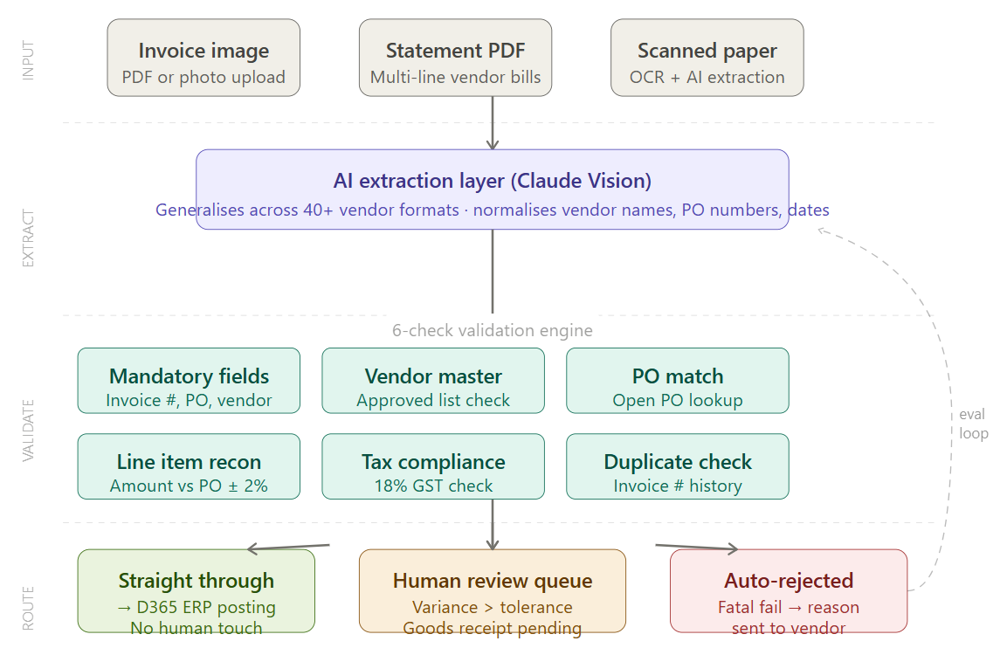
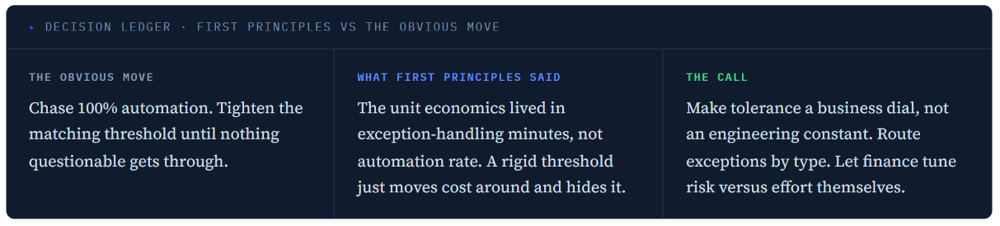

Rebuilt an invoice processing system in eight weeks by defining what a "clean invoice" actually meant before touching the technology.
38% straight-through processing, one undifferentiated exception queue that skilled people triaged by hand all day.
91% STP with three-bucket routing (auto-post, quick-review, true exception) and a finance-owned tolerance dial.
Thousands of supplier invoices arrived in inconsistent formats. The accounts payable team manually keyed most of them, and every mismatch between invoice, PO, and receipt meant a human chased it down. Straight-through processing sat at 38%. Cost per invoice was high, and error rates were higher.
Everyone framed this as an extraction accuracy problem. It wasn't. Extraction was already decent.
The real cost driver was exception handling: every invoice that fell out of the happy path landed in one undifferentiated queue, and skilled people spent their day triaging noise.
I designed a pipeline around confidence scoring and three-bucket exception routing: auto-post, quick-review, and true exceptions. Instead of a fixed matching threshold, I shipped a 2% variance tolerance as an adjustable dial the finance team controls. Every automated decision carries an audit trace, and corrections feed a learning loop, so the system improves on the invoices it got wrong.


The safe option was rules-based: engineering preferred it, the client's finance team preferred it. My argument: we had 40+ vendors with zero invoice standardization, and a rules engine breaks every time a vendor changes their template. The trade-off I accepted was lower initial trust from stakeholders and harder-to-explain failures. I underestimated how much the "black box" concern would slow adoption, and had to build explicit confidence signals before finance would trust routing decisions they couldn't inspect.
Delivered in eight weeks, including migrating the extraction layer from Nanonets to an Azure-based pipeline mid-flight without dropping STP. I wrote the specs, defined the API contracts, and sat in the eval reviews myself.
The surface ask was: replace the third-party extraction tool. The real problem was that nobody had ever formally defined what a clean invoice looks like, and the old tool had its own exception taxonomy baked into a black box that was wrong for this context. That had to be answered before a single line of code was written.
I chose an AI extraction layer over a rules engine. The AI layer generalizes across formats and improves as it sees more invoices; a rules engine breaks every time a vendor changes their template. What I was wrong about initially: I underestimated how much the "black box" concern would slow adoption. I had to build explicit confidence signals, an extraction confidence score and a raw text view, before the finance team would trust routing decisions they couldn't inspect.
I wrote six validation checks, mandatory fields, vendor master, PO match, line item reconciliation, tax compliance, duplicate check, before anyone touched exception routing. The instinct was to replicate what the old tool flagged. I pushed back: replicating the old logic replicates the old problems. Defining "clean" from first principles added two weeks of discovery work, but gave us a shared language once we built the exception logic.
I didn't set the tolerance threshold. I sat with the client's finance and accounting team and asked what level of discrepancy they could accept the system deciding on, versus what needed a human. We started at 1%, too conservative, the review queue was still overwhelming. We loosened it to 2% at week four as extraction accuracy proved out, and I built it as a configurable dial, not a hardcoded rule.
Blind spotI initially thought the threshold was a technical parameter. It's actually a trust parameter: the right number is wherever the finance team stops second-guessing the system.
Most teams build two buckets: approved and needs review. I built three: auto-correct, human review, auto-reject. The auto-correct bucket, vendor name variants, date formatting, PO number spacing, prevented hundreds of invoices from landing in the human queue for reasons that were noise, not signal.
Blind spotI almost didn't build the auto-correct layer, engineering pushed back on complexity. What changed my mind was watching the finance team spend twenty minutes hunting an invoice that had been mis-filed because "Microsoft Corp" didn't match "Microsoft Corporation."
I made exception rate, not STP rate, the primary metric. Optimizing for STP rate incentivizes loosening tolerances and pushing borderline invoices through; tracking exceptions by type and vendor shows where the system is actually failing. Salesforce was generating 40% of the human review queue. That told me their invoice format had something unusual. One custom normalization rule moved STP eight points in a single week.
Vendor-facing language: I designed rejection reasons for the finance team, clear and auditable, but they also go back to vendors. "Line item variance 3.04% exceeds 2% tolerance against PO-2024-003" means nothing to a vendor's accounts payable team. I rewrote the rejection language mid-build after the first vendor called confused.
Goods receipt as a hard dependency: I initially made goods receipt confirmation a fatal check. Invoices routinely arrive before the warehouse team processes the receipt, so this was auto-rejecting completely normal invoices. I demoted it to a soft check after three false rejections in week one.
The missing "why": the first version showed finance managers that exceptions existed, not why. I watched a finance manager spend twenty minutes hunting one invoice. Adding the rejection reason and queue age was a requirement written in an afternoon, and it cut average exception resolution time by 60%.
I'd run a vendor survey before defining the rejection taxonomy. The vendors are upstream of this system, and I treated them as downstream. Getting two or three vendors on a call in week one, asking what they'd actually need to know to fix a rejection, would have saved two iterations on the rejection message format. I'd also instrument the auto-correct layer from day one. By week six I had no visibility into how many vendor name variants were being silently corrected, and that data would have told me much earlier which vendors needed format guidance.
I'm looking for Senior AI Product Manager roles where the product ships to people who depend on it.
Let's talk →